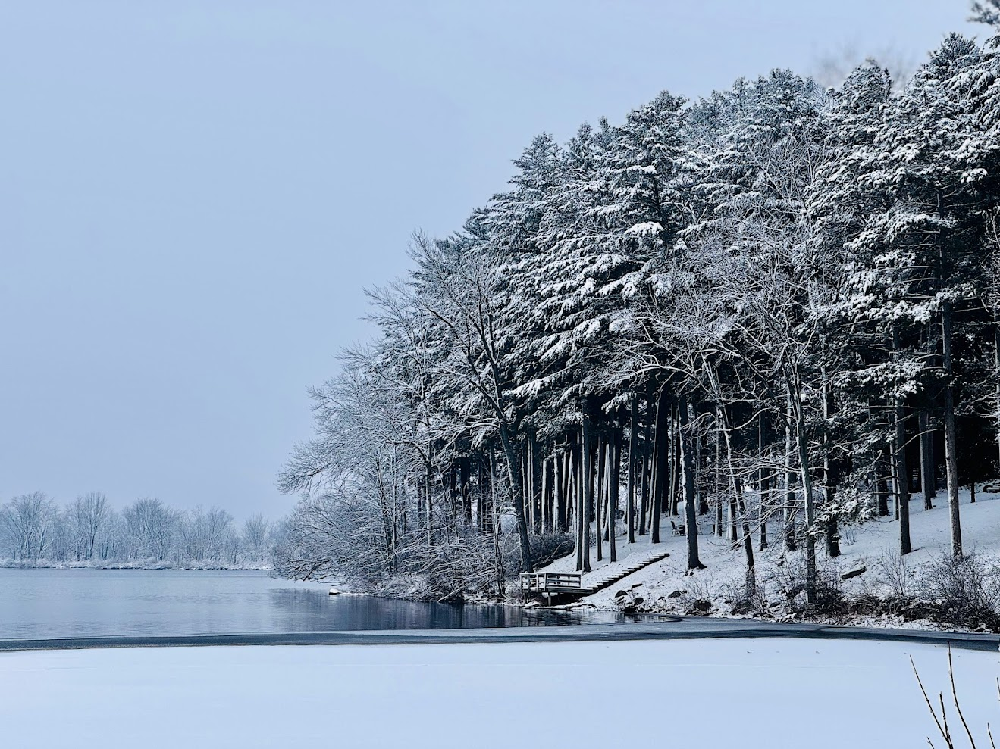

Some journeys don't begin at the airport — they begin in your heart, quietly, long before you pack your bags.
For me, that journey started in Sri Lanka. A place full of warmth — not just the weather, but the people, the food, and the feeling of home. Life there was familiar, comfortable, and deeply connected to family and routine.
But somewhere along the way, I started dreaming of something bigger. A different life. A new challenge. A new version of myself.
And one day, that dream turned into a journey I had been waiting for.
🌏 Leaving Home
The goodbye was harder than I expected.
No matter how strong you think you are, nothing really prepares you for that moment — standing at the airport, knowing life is about to change. I carried excitement in one hand and uncertainty in the other.
The flight felt long. Not just because of the hours, but because of the thoughts — questions, hopes, and quiet worries traveling with me.
🇺🇸 First Impressions
When I arrived in the United States, everything felt… different.
The roads, the silence, the pace of life — even the way people interacted. But the biggest surprise? The weather.
Coming from Sri Lanka's warm, tropical climate, I wasn't ready for the cold. The first time I felt that freezing wind, it didn't just touch my skin — it went straight through me. Snow, which once looked magical in pictures, quickly became something I had to learn to live with.
Simple things became challenges:
- Walking outside in winter
- Dressing in layers
- Planning even short trips outside

First winter in the USA
🌱 The Real Journey Begins
Slowly, reality set in. This wasn't just a new place — it was a completely new life.
Everything had to be learned again: a different education system, communicating in English every day, managing time, studies, and responsibilities, living far from family support, and adjusting to a new culture and lifestyle.
There were moments of confusion and self-doubt, but having my wife by my side made this journey stronger and more meaningful. Even on difficult days, that support made a difference. And over time, those challenges started turning into growth.
✨ Becoming Someone New
Little by little, things began to feel more familiar. Not the same as home — but something new, something I was building for myself.
I realized this journey is not just about moving from one country to another. It's about stepping out of your comfort zone, facing challenges you never imagined, and slowly becoming a stronger version of yourself.

Add your caption here — e.g. "Building a new life in Madison, WI"
💭 Looking Back
If I could go back to that moment at the airport, I would still choose this path. Not because it is easy — but because it is worth it.
This journey from Sri Lanka to the USA is still ongoing. And every day, I am learning, adapting, and growing — one step at a time.